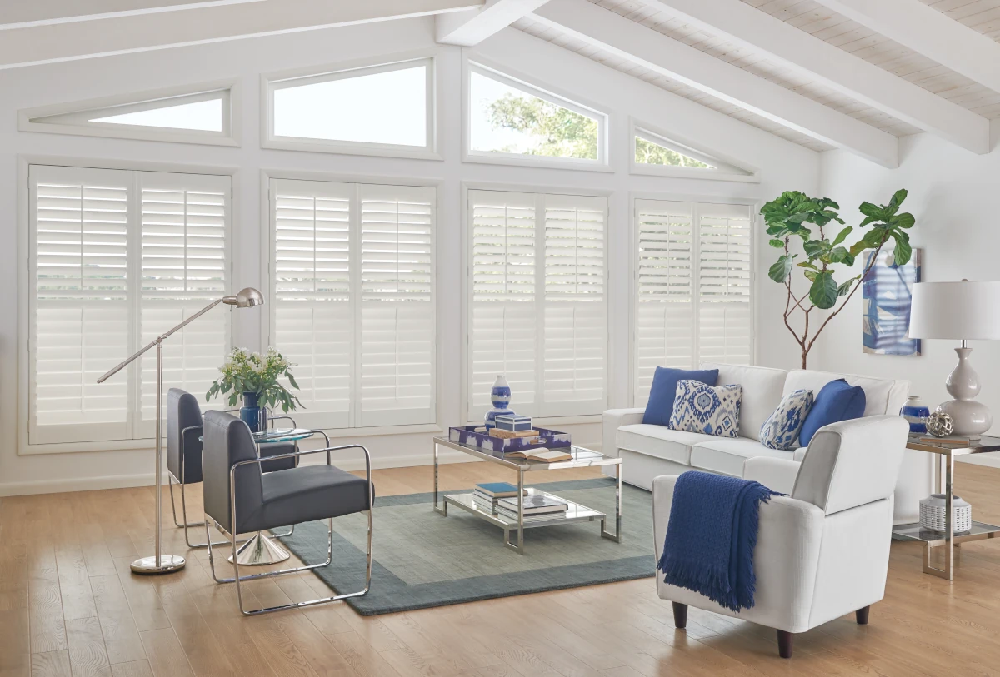
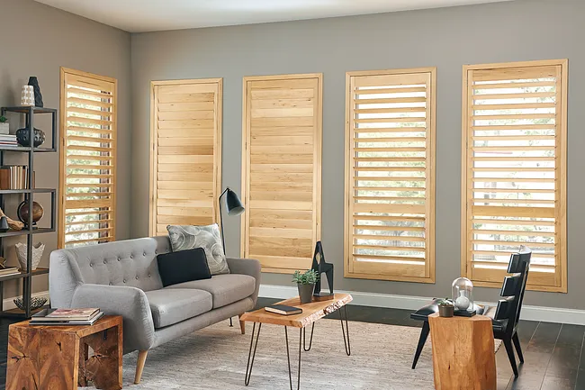
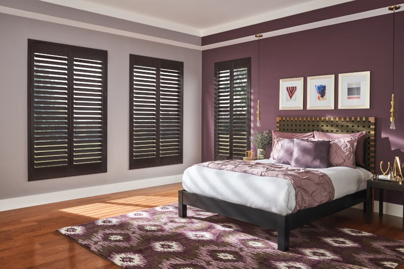
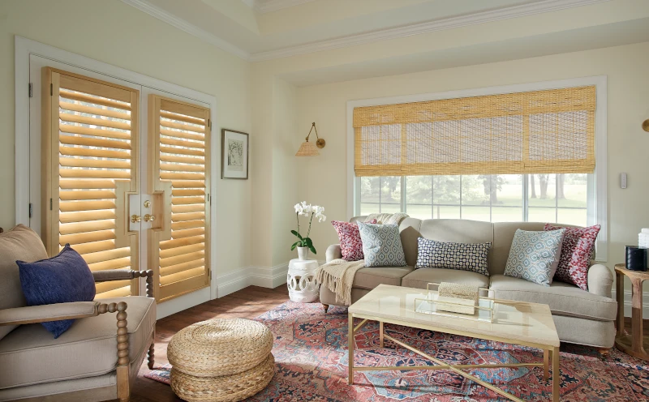
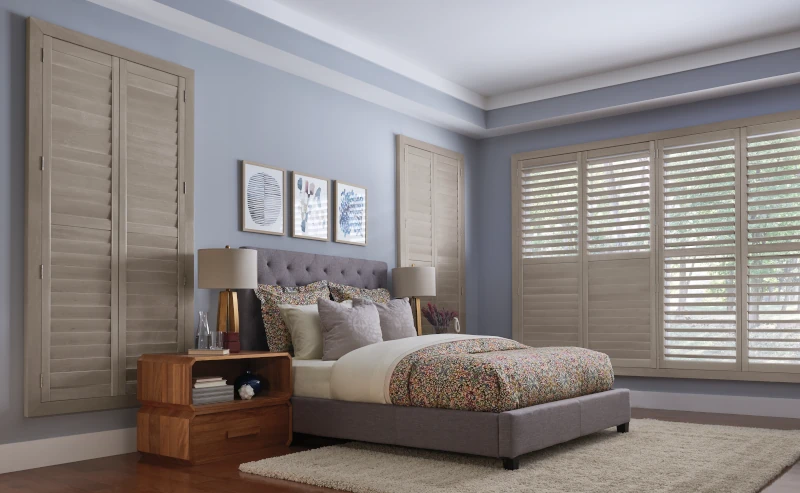
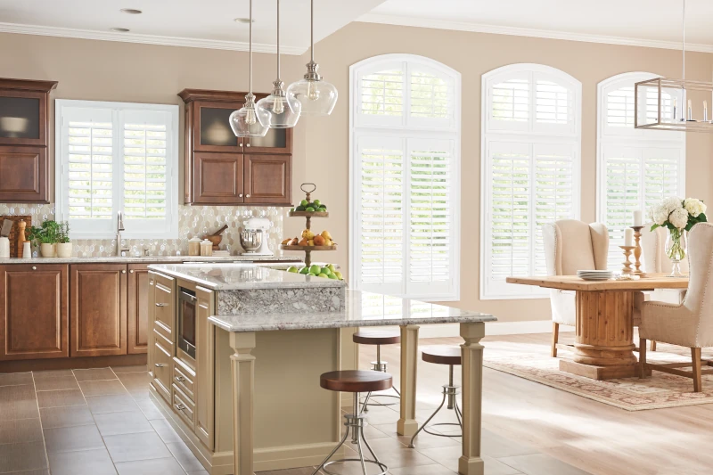
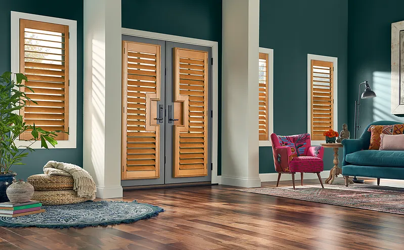

Custom Window Shutters in Oklahoma City & Edmond
What You'll Learn in This Article:
- ✓ How plantation shutters add elegance and long-term value to your Oklahoma City home
- ✓ The differences between hardwood and composite shutters for your specific needs
- ✓ Why custom shutters are superior to pre-made options for window treatments
- ✓ How to choose between wood and composite materials based on moisture exposure
Call Brent & Edna today at 405-259-5599
for your window treatment questions.
Looking to upgrade your Oklahoma City or Edmond home with stylish, energy-efficient window shutters? At Shaded In The Sun, we specialize in custom Graber® shutters that blend beauty with performance — all installed by a local team you can trust. We also carry Norman® shutters for homeowners looking for additional options. Not sure if shutters are right for you? Explore our guide to the best alternatives to blinds or learn about the differences between shades, shutters, and blinds to find your perfect match.
Interior Wood Shutters
- • A Legacy of Quality: Crafted from exquisite 100% North American hardwood, our interior wood shutters epitomize elegance and sophistication.
- • Handcrafted Perfection: Each shutter is meticulously handcrafted, ensuring unparalleled quality and attention to detail. Choose from a diverse range of custom styles to perfectly complement your unique architectural style and personal taste.
- • Investing in Your Home: More than just a window covering, interior wood shutters are an investment in the enduring beauty and value of your home. They add a touch of warmth, character, and timeless appeal that will be admired for years to come.
Composite Shutters
- • The Perfect Solution for Every Room: When durability and moisture resistance are paramount, composite shutters offer a versatile and elegant solution. Engineered with high-quality materials, these shutters are ideal for kitchens, bathrooms, laundry rooms, and any space prone to high humidity.
- • Beauty and Resilience: Enjoy the same timeless beauty and style as real wood shutters, but with the added benefit of exceptional durability and resistance to moisture, warping, and fading.
- • Easy Care and Maintenance: Composite shutters are designed for effortless maintenance, requiring minimal cleaning and upkeep.
Wood or Composite — We Have Your Perfect Shutter
Whether you prefer the natural beauty of real wood or the durability of composite materials, we carry diverse selections of shutter styles to suit every home and design preference. Both deliver quality craftsmanship and elegant designs that enhance your home's beauty. Want to explore all your options? Check out our guide to luxury window treatments for inspiration.
Experience the difference of custom window shutters today. Explore our extensive collection and find the perfect shutters to transform your windows and enhance the beauty of your home.
Custom Shutter Options for Your Home






Have questions about custom window shutters? See our comprehensive FAQ for expert answers.
Ready to experience beautiful custom shutters? Call Brent & Edna at 405-259-5599 for your free in-home consultation.
Related Articles
Motorized Blinds for Smart Homes
Discover how motorized window treatments add convenience and modern technology to your Oklahoma City home. Explore motorized shade options
Explore All Window Blind Types
Learn about the complete range of window covering options available and find what works best for your needs. Discover blind options
Energy-Efficient Window Treatments
Save on heating and cooling costs with energy-efficient window treatments designed for Oklahoma's climate. Learn about energy efficiency